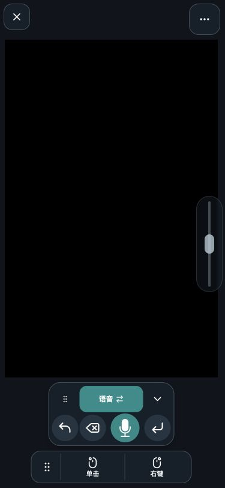
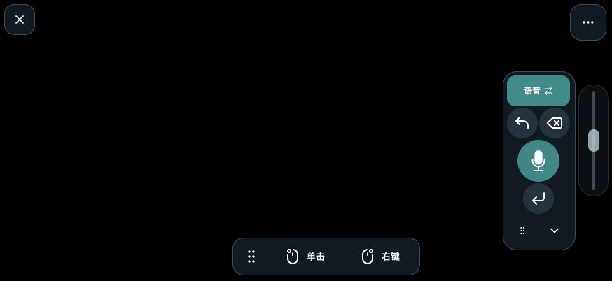

安装电脑端
在 Mac 或 Windows 上安装掌控，按提示完成必要权限。

坐在沙发上、站在演示台前，或只是换个更舒服的姿势。让手边的手机，成为电脑的延伸。
移动鼠标、左右点击、滚动页面，用熟悉的手机手势操作电脑。撤销、删除与回车，也随手可达。
手机触控 → 电脑操作
在 Mac 或 Windows 上安装掌控，按提示完成必要权限。
让手机和电脑连接同一个本地网络。当前版本不支持跨网络远程连接。
使用手机 App 扫描电脑端二维码，也可以手动填写配对信息。
先了解安装要求，再选择适合你电脑的版本。
获取掌控